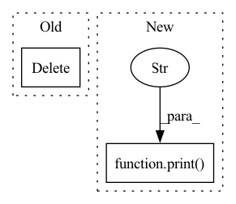

Pattern ID :39136
Before Change
tolerance=commands.atol,
)
timings[engine_name] = time_buffer
del model_pytorch
if "tensorrt" in commands.backend:
try:
import tensorrt as trtAfter Change
print("latencies:")
for name, time_buffer in timings.items():
print_timings(name=name, timings=time_buffer)
print(f"Each infence engine output is within {commands.atol} tolerance compared to Pytorch output" )
def entrypoint():
args = parse_args()In pattern: SUPERPATTERN
Frequency: 6
Non-data size: 2
Instances Fragment ID: 111335050
Project Name: els-rd/transformer-deploy
Commit Name: ccfeb215fda7ee635068f239b345ab7380f61c6b
Time: 2022-02-08
Author: pommedeterresautee@users.noreply.github.com
File Name: src/transformer_deploy/convert.py
M Class Name: AnonimousClass
N Class Name: AnonimousClass
M Method Name: main(1)
N Method Name: main(1)
M Parent Class:
N Parent Class:
M File Name: src/transformer_deploy/convert.py
N File Name: src/transformer_deploy/convert.py
M Start Line: 124
M End Line: 307
N Start Line: 152
N End Line: 352
Before Change
embedded_scalar_list.append(x)
scalar_context_list.append(x)
del x, mask, bo_sum, seq
// last_delay: The delay between when we last acted and the current observation, in game steps.
// This may be different from what we requested due to network latency or APM limits.
After Change
// unit_counts_bow: A bag-of-words unit count from `entity_list`.
// The unit count vector is embedded by square rooting, passing through a linear layer, and passing through a ReLU
// note make sure unit_counts_bow all >= 0, otherwise torch.sqrt will produce nan !
print("unit_counts_bow" , unit_counts_bow) if debug else None
assert (unit_counts_bow >= 0).all()
unit_counts_bow = torch.sqrt(unit_counts_bow)
Fragment ID: 111335057
Project Name: liuruoze/mini-alphastar
Commit Name: ec14048b756c72c6a970d00c327929271568da2e
Time: 2022-01-17
Author: liuruoze@163.com
File Name: alphastarmini/core/arch/scalar_encoder.py
M Class Name: ScalarEncoder
N Class Name: ScalarEncoder
M Method Name: forward(2)
N Method Name: forward(2)
M Parent Class: nn.Module
N Parent Class: nn.Module
M File Name: alphastarmini/core/arch/scalar_encoder.py
N File Name: alphastarmini/core/arch/scalar_encoder.py
M Start Line: 289
M End Line: 437
N Start Line: 289
N End Line: 440
Before Change
if f1 and "f1_1k" in entity:
del entity["f1_1k"]
if f1 and "f1_10k" in entity:
del entity["f1_10k"]
if f1 and "f1_1k_f" in entity:
del entity["f1_1k_f"]
if f1 and "f1_onnx" in entity:
del entity["f1_onnx"]After Change
if f1:
for key in ["f1_1k", "f1_10k", "f1_1k_f", "f1_onnx"]:
if key in entity:
print(f"Resetting "{key}"" )
del entity[key]
if ifs:
if "mean" in entity:
del entity["mean"] Fragment ID: 111335051
Project Name: microsoft/archai
Commit Name: 3510da6d87963313cb7191c049b20dc3989f61ac
Time: 2022-12-16
Author: clovett@microsoft.com
File Name: devices/azure/reset.py
M Class Name: AnonimousClass
N Class Name: AnonimousClass
M Method Name: reset_metrics(4)
N Method Name: reset_metrics(4)
M Parent Class:
N Parent Class:
M File Name: devices/azure/reset.py
N File Name: devices/azure/reset.py
M Start Line: 14
M End Line: 22
N Start Line: 14
N End Line: 19
Before Change
// break
style_gan_array = np.array(style_gan_list)
del style_gan_list
ffhq_array = np.array(ffhq_list)
del ffhq_list
print("train set loaded.", style_gan_array.shape, ffhq_array.shape)
After Change
del fake_list
real_array = np.array(real_list)
del real_list
print("train set loaded." , fake_array.shape, real_array.shape)
// mean image plots
fake_mean_packet_image = generate_frequency_packet_image(
np.mean(fake_array, axis=(0, -1)), degree=3 Fragment ID: 111335052
Project Name: gan-police/frequency-forensics
Commit Name: e70f0a88ce46e7e51e775c0c34c30aa3e56b2605
Time: 2022-02-23
Author: v0lta@users.noreply.github.com
File Name: src/freqdect/plot_mean_packets.py
M Class Name: AnonimousClass
N Class Name: AnonimousClass
M Method Name: main(0)
N Method Name: main(0)
M Parent Class:
N Parent Class:
M File Name: src/freqdect/plot_mean_packets.py
N File Name: src/freqdect/plot_mean_packets.py
M Start Line: 163
M End Line: 267
N Start Line: 164
N End Line: 277
Before Change
def fit(self, df_features):
fetch_df = fetch_df_by_index(df, slice(self.fit_start_time, self.fit_end_time), level="datetime")
del df
df_values = fetch_df.values
names = {
"price": slice(0, 10),
"volume": slice(10, 12),After Change
self.fit_end_time = fit_end_time
def fit(self, df_features):
print("==============fit==============" )
fetch_df = fetch_df_by_index(df_features, slice(self.fit_start_time, self.fit_end_time), level="datetime")
del df_features
df_values = fetch_df.values
names = { Fragment ID: 111335053
Project Name: microsoft/qlib
Commit Name: 6a145df87c2c15de2e4ad36920170be0d29f3c17
Time: 2021-01-25
Author: bxd98@126.com
File Name: examples/high_freq/highfreq_processor.py
M Class Name: HighFreqNorm
N Class Name: HighFreqNorm
M Method Name: fit(2)
N Method Name: fit(2)
M Parent Class: Processor
N Parent Class: Processor
M File Name: examples/high_freq/highfreq_processor.py
N File Name: examples/high_freq/highfreq_processor.py
M Start Line: 15
M End Line: 32
N Start Line: 13
N End Line: 32